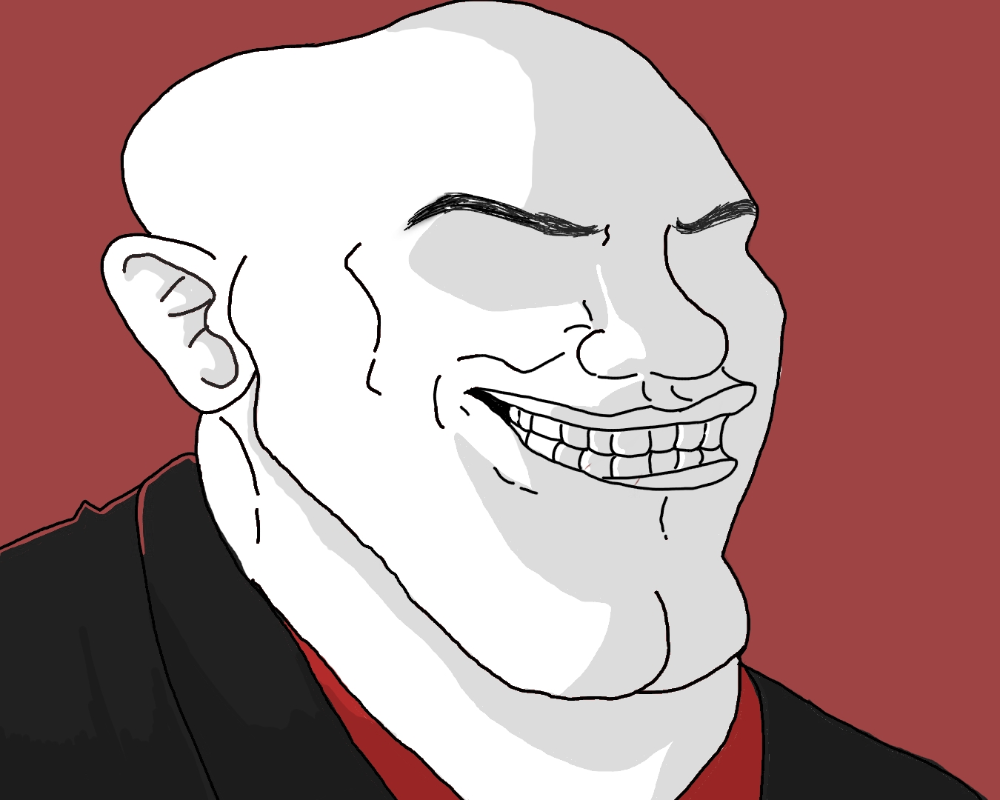
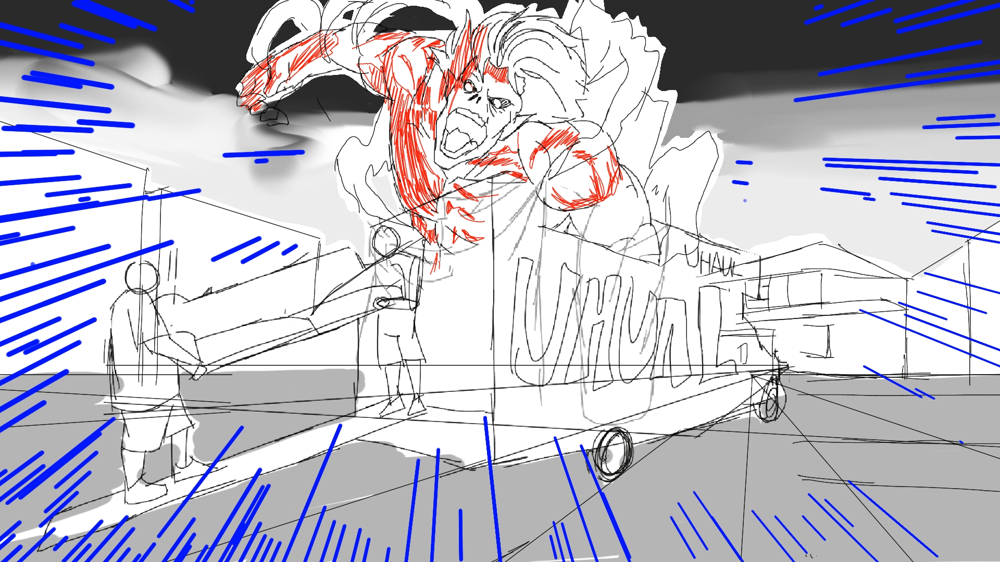
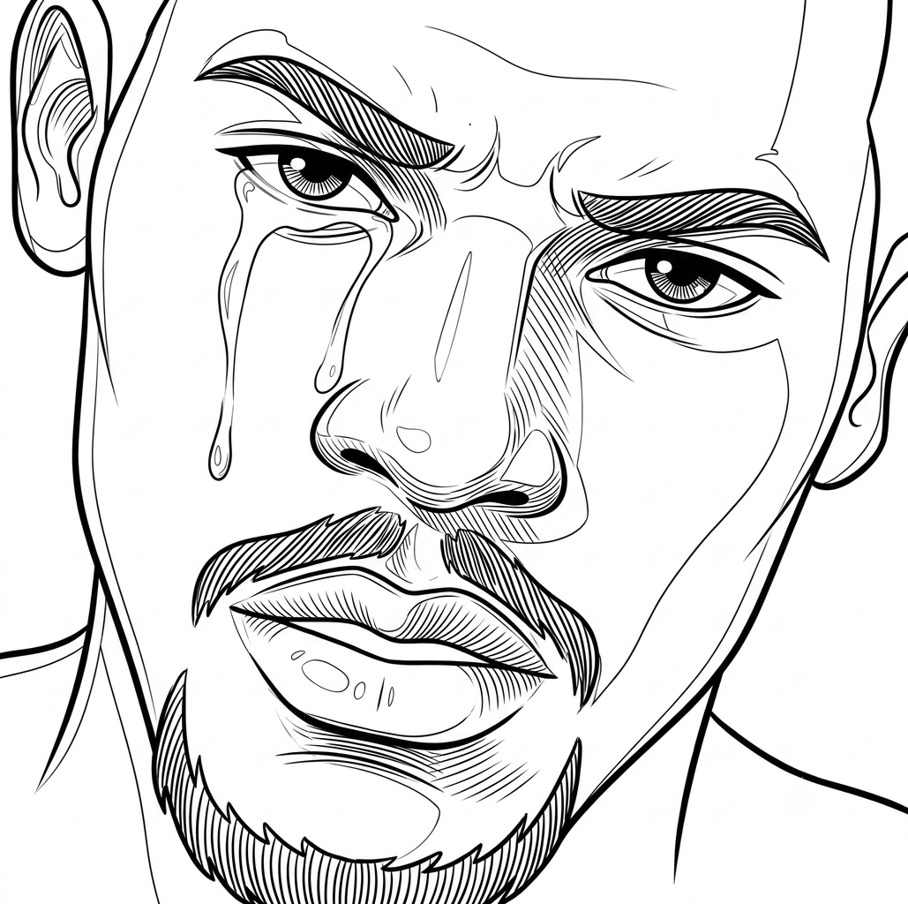

ABOUT
WHO IS SHABOO

Shaboo's Foreign to the US came arrived here when he was very young with his family. Shaboo can be described as an hyperbolized persona of the real life counter part. He enjoys making people laugh through the videos he creates, and loves to express himself through art.
Shaboo began drawing when he was very young, recounting one of his early memories of being hit after he would repeatedly draw Danny Phantom on the white table cloths. He later would be introduced to Anime by his older siblings and ever since then he would fall in love. Being heavily inspired, he first began animating on a DSi through a software called Flipnote Studio.
Why did he start?

How He got his name

The Name Shaboo came from a nickname given to him when during a specific encounter he had with 'bully.' Was mocked for his name trying to make a joke, he ended yelling out the name Shaboo and ever since then it stuck. Currently Shaboo been creating videos for over a decade, through another account and later branching out into his own. Massing over 100k Followers with videos reaching millions of viewers, Shaboo is headed in the positive direction.